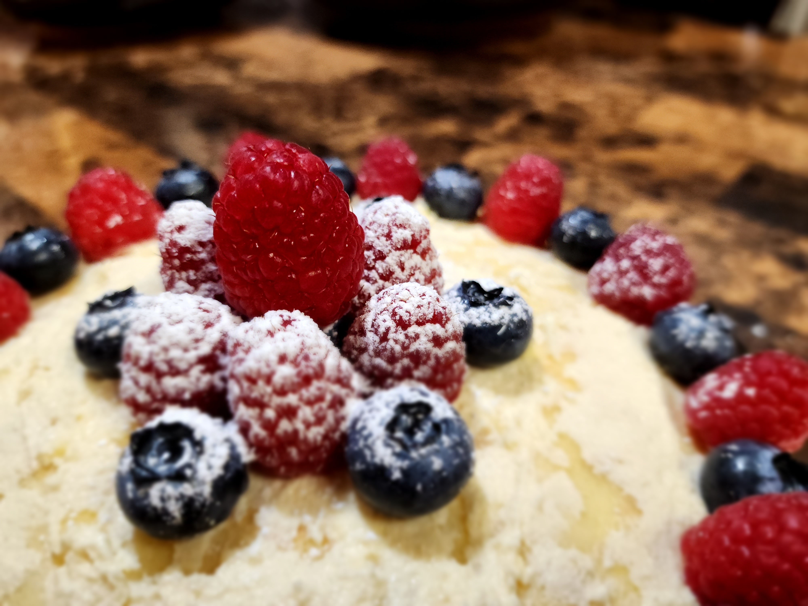

crêpe cake
ingredients
- water
- milk
- eggs
-
butter
- butter can be salted or unsalted
- to melt, cut into smaller pieces, put into a small microwave-safe bowl, cover the top with plastic wrap, microwave for 27 seconds, and then in 9-second intervals until it's all/mostly liquid
- to soften, unwrap and let it sit at room temperature for ~30 minutes until it gets dented by lightly poking
- (all-purpose) flour
- (granulated) sugar
- salt
- sweetened condensed milk
-
cream cheese
- to soften, unwrap and let it sit at room temperature for ~30 minutes until it gets dented by lightly poking
- vanilla extract
- strawberries
- blueberries
- powdered sugar
equipment
- blender
- 9-inch non-stick pan
- stovetop at medium heat
- plate
- stand mixer
- big cool-looking plate
instructions
crêpe
melt 6 tablespoon butter in a small microwave-safe bowl
blend 3/4 cup warm water, 1 1/2 cup milk, 6 eggs, the butter, 1 1/2 cup flour, 3 tablespoon sugar, and 1/8 teaspoon salt using the blender until well-combined
heat a 9-inch non-stick pan over medium heat
lightly coat with butter
for each crepe:
- add enough batter to lightly coat the pan and spread evenly
- cook for ~30 seconds on each side
cool to room temperature
frosting
soften 1 cup butter
beat the butter and 12 ounce sweetened condensed milk using the stand mixer with the wire whip attachment for ~7 minutes or until it looks whipped and light in color
beat in 8 ounce softened cream cheese in 1 tablespoon increments for ~3 minutes or until it is no longer lumpy
beat in ~2 tsp vanilla extract until well incorporated and smooth
assembling pt. 1
spread 1 1/2 tablespoon frosting on base of a cool-looking plate big enough to hold the crêpe cake
place first crêpe on top
for each crêpe or until you reached the desired height:
- spread 3 tablespoon of frosting on top of the previous crêpe
- place crêpe on top
spread 1 1/2 tablespoon frosting on top of the topmost crêpe
refrigerate cake for ~6 hours or until frosting has become hard
assembling pt. 2
decorate with strawberries and blueberries
dust with powdered sugar

insert funny description here